Harlem roots
1967–1982
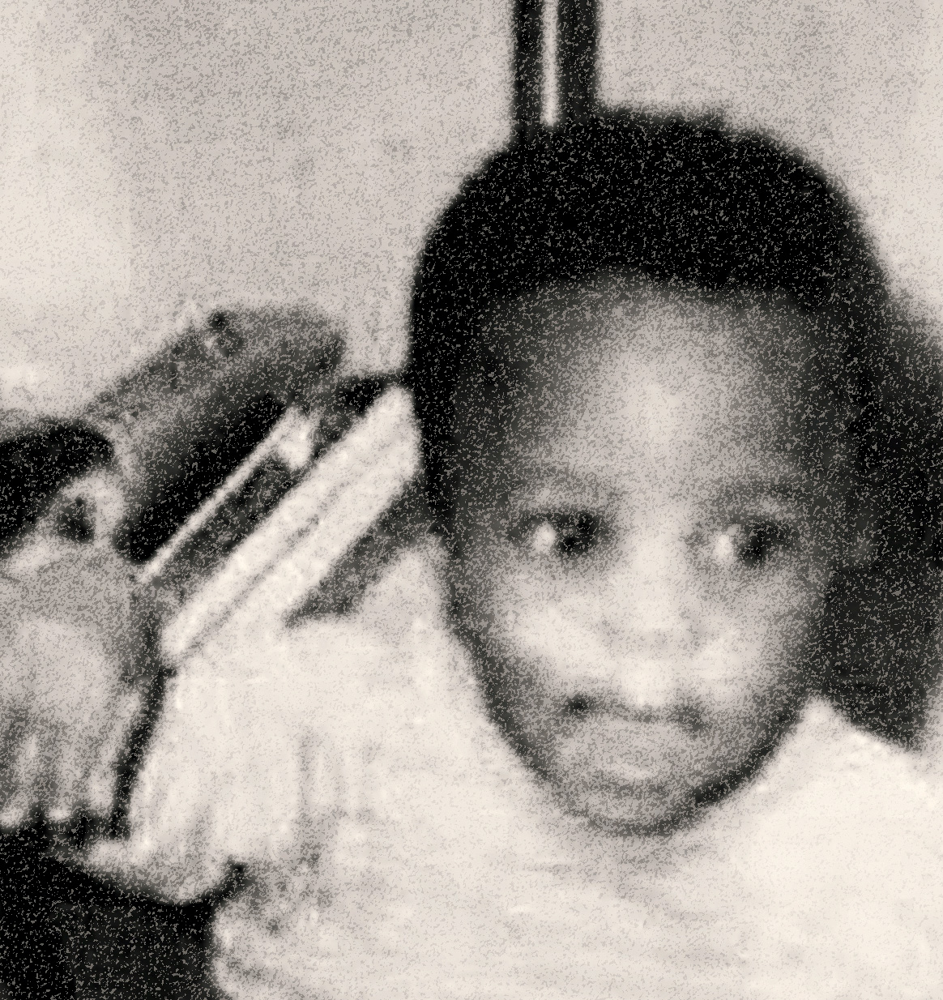
1967
Born in Harlem
+−
Born Edward Theodore Riley on October 8, 1967, and raised in Harlem's St. Nicholas Houses, surrounded by church music, family, block parties, and a new sound called hip-hop starting to take shape on the streets around him. He describes a childhood shaped by church services, family gatherings, and the music heard around the neighborhood — the places where he first watched performers, listened closely, and began imagining himself as a musician.
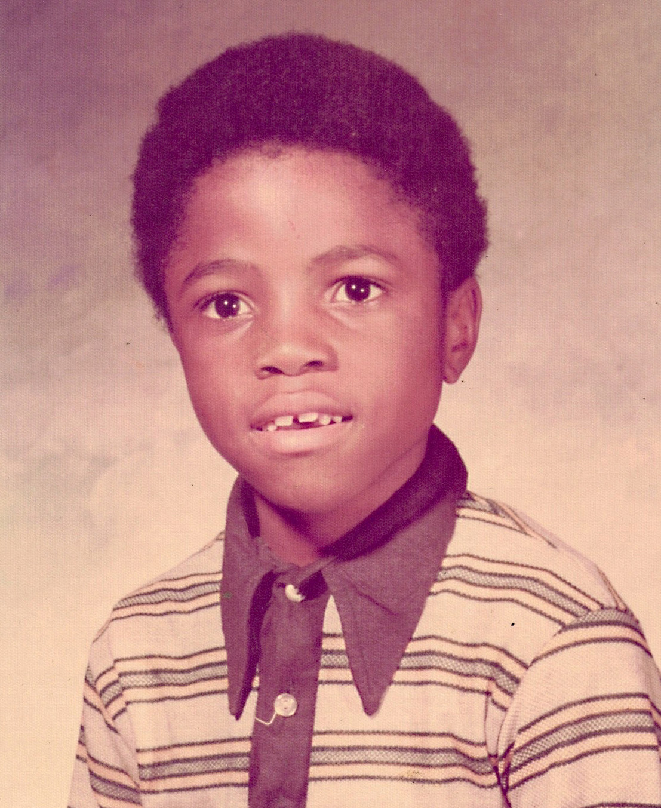
1972
A five-year-old musician
+−
By age five he's already picking out music on instruments around the house — an early sign of the ear and instinct that family and neighbors would soon start to notice. Singing and playing became part of his identity before he entered the record business or received his first keyboard; his mother, Mildred, later remembered how early his musical ability and desire to perform became apparent.
Late 1970s The Apollo becomes a classroom +−
Teddy waits outside the Apollo after school, studies the artists arriving on 126th Street, and once slips backstage during a Motown bill featuring the Jackson 5 and the Temptations. Watching professional acts arrive, rehearse, and perform gives him an early picture of show business as disciplined work — proof that young performers could command a major stage.
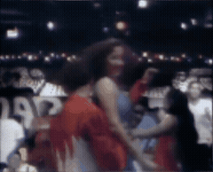
1979
"Rapper's Delight" changes the air
+−
The Sugarhill Gang record makes the emerging hip-hop movement feel commercially possible, and Teddy identifies it as an early spark for his interest in the new sound. It connects the rhythms heard at local parties with the record industry — he starts imagining keyboards, melody, and live musicianship inside hip-hop's emerging framework.
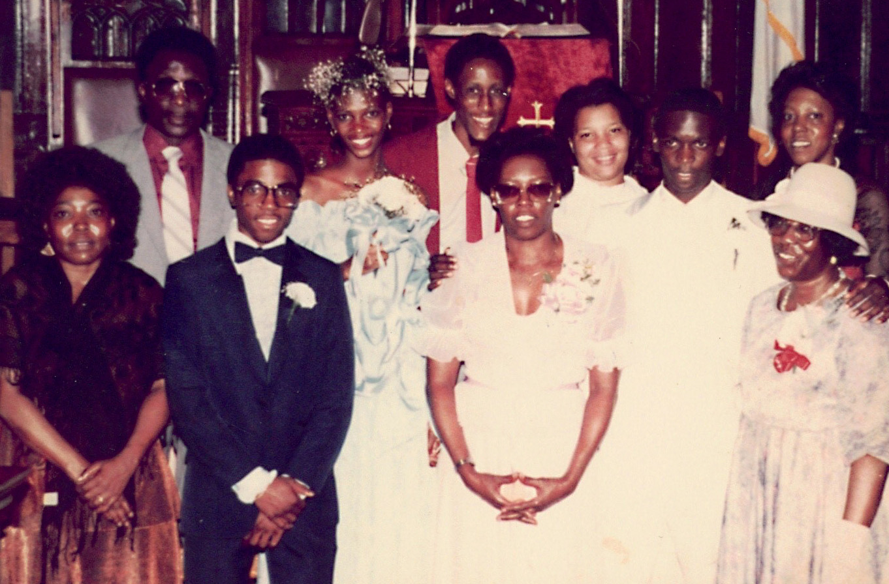
1980
The first keyboard
+−
At twelve, a Casio CZ-10 becomes his first keyboard — he takes it everywhere. Playing in the Universal Temple church band teaches him keys and several other instruments; the instrument accompanies him between home, school, church, and the street as he learns by rebuilding songs and experimenting with tones.
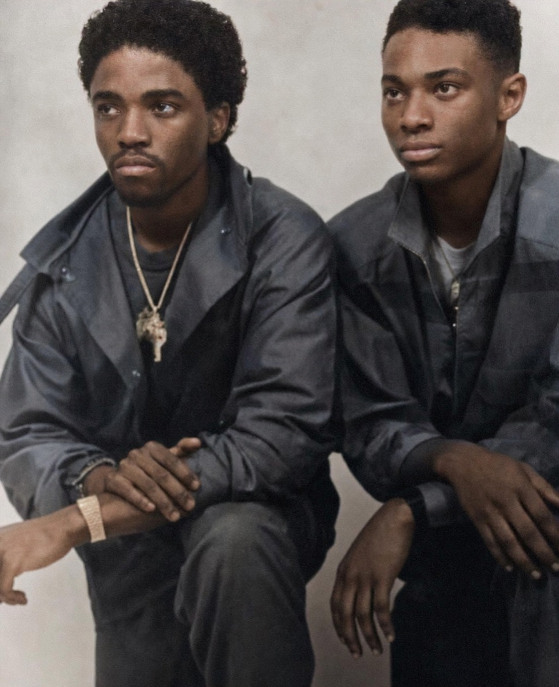
1980
Auditioning for Total Climax
+−
After hearing Total Climax rehearse near his home, twelve-year-old Teddy auditions. Though much younger than the other musicians, he wins the keyboard chair — the older members initially see a child, but his command of the instrument changes the room and puts him beside experienced players at an age when most were still learning alone.
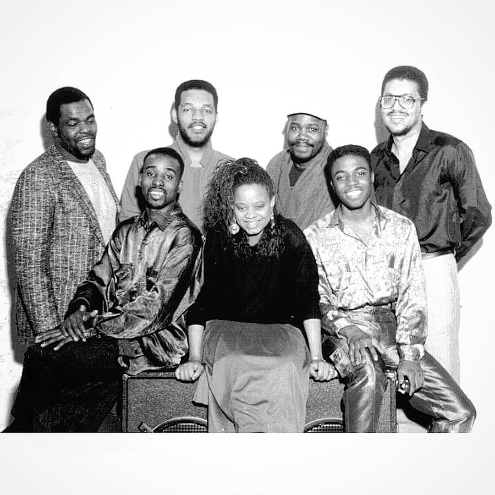
1980–81
Learning the bandstand
+−
He rehearses constantly with Total Climax and learns arrangements, discipline, stagecraft, and how a professional band operates — following a musical director, holding a part, supporting singers, and recovering when something goes wrong live. Those habits later shape the exacting way he runs recording sessions.
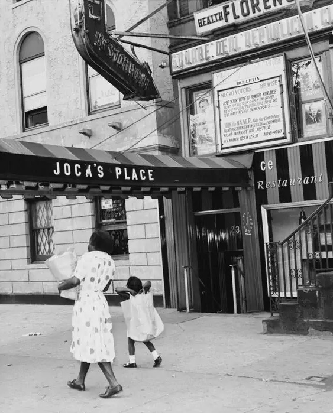
1981
Jock's Place
+−
Around age thirteen, Teddy performs for adult audiences at his uncle Willie's club, Jock's Place, while also absorbing the responsibilities of becoming a young father. Playing for grown audiences forces him to read a room and keep dancers engaged, and exposes him to the practical side of entertainment — rehearsals, equipment, set lists, late-night performance culture.
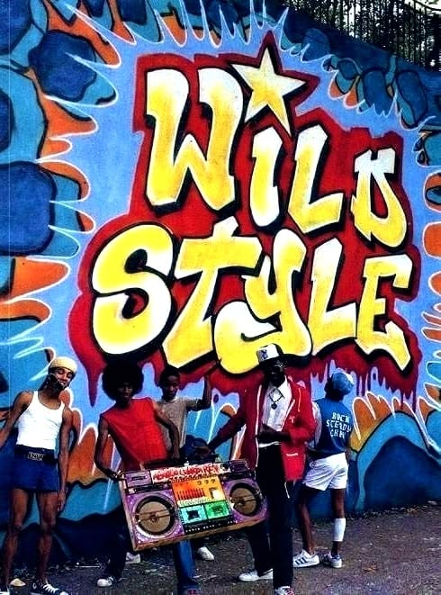
1981
The SHACK Crew
+−
After his parents separate, Teddy joins the SHACK Crew. He keeps making music while the pull of Harlem street life threatens to redirect his future — the crew provides belonging during a period of family disruption, but also places him close to hustling and violence, with music the competing identity offering a route beyond the block.
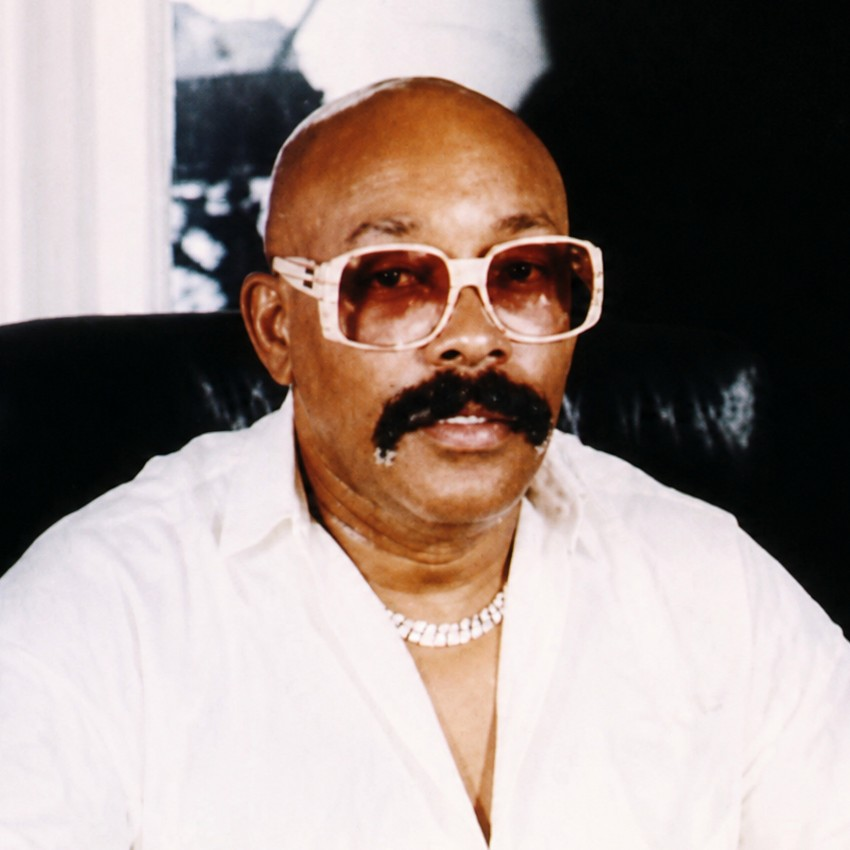
1982
Gene Griffin takes notice
+−
At about fourteen, Teddy meets Gene Griffin, who recognizes his musical promise and begins drawing him toward a more ambitious professional path. Griffin combines mentorship, management, and strict musical direction — their complicated partnership opens industry doors while later disputes over money and control become a major lesson in ownership.
1982 A police officer's warning +−
Caught during a drug sweep, Teddy is given a consequential break by an officer who urges him to choose music over the street; his mother reinforces the message. The officer releases him rather than letting the incident end his future, telling him he could become somebody — years later, Teddy encounters the same officer when Guy returns to perform sold-out shows at the Apollo.
First records
1983–1986
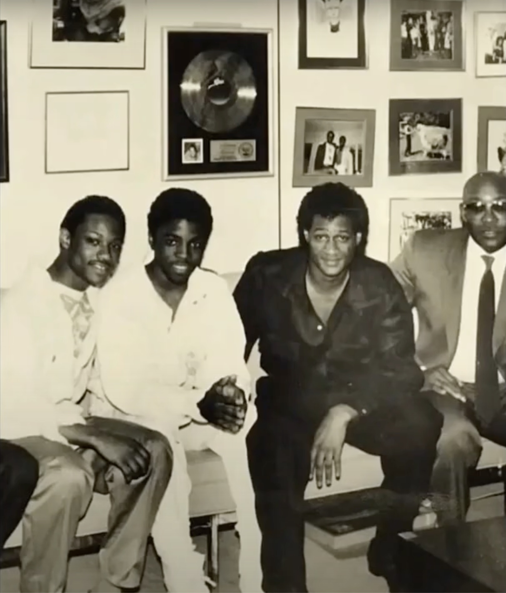
1983
Kids at Work
+−
At sixteen, manager Gene Griffin brings Teddy into Kids at Work — his first step out of neighborhood performances and into the record business. The move gives Teddy a group built around his voice and musical ability, shifting his attention toward label meetings, studio sessions, and the possibility of releasing records nationally.
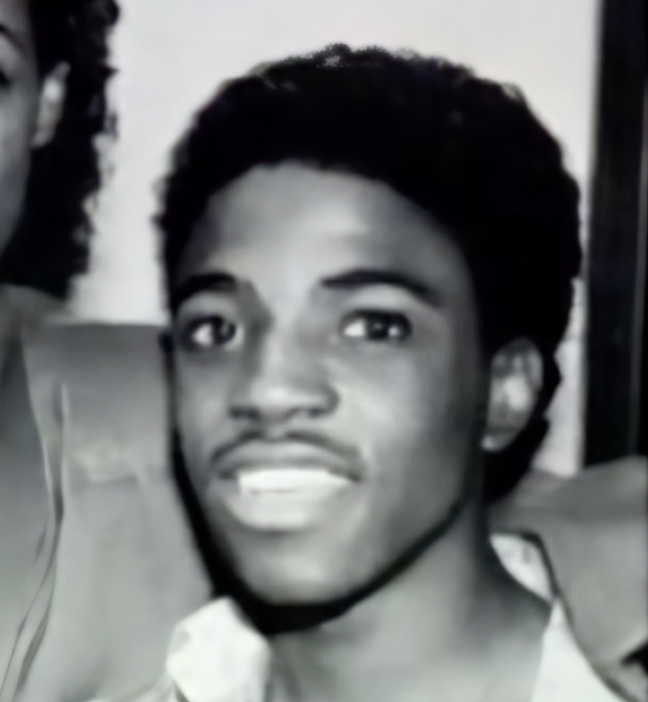
1983–84
Leaving Total Climax
+−
Teddy steps away from Total Climax to focus completely on Kids at Work, trading the comfort of his first band for a serious recording opportunity. The decision ends an important apprenticeship with the older musicians who had accepted him at twelve, as Gene Griffin pursues recording and management opportunities for the younger group.
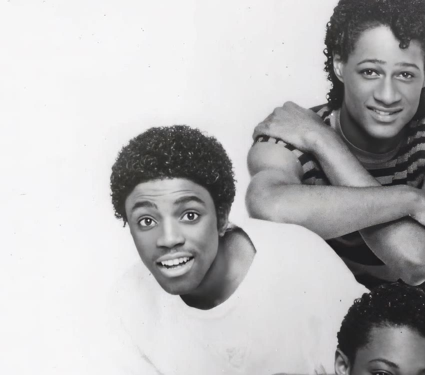
1984
First studio album
+−
Kids at Work's self-titled debut — including "Sugar Baby," "Singing Hey Yeah," and "She's My Baby" — gives Teddy his first real time in a recording studio and his first taste of local success. The sessions give him direct experience with multitrack recording, arrangement decisions, and overdubbing, pulling him toward production.
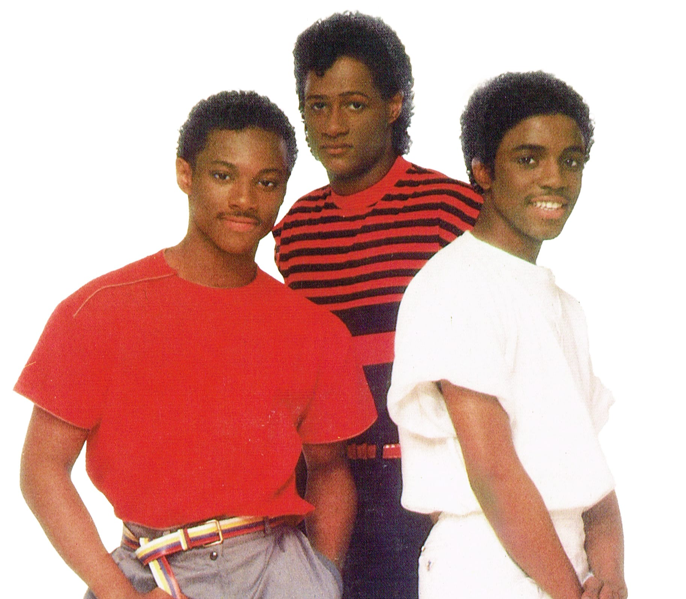
1984
A CBS Records deal
+−
Kids at Work signs with CBS Records. Because Teddy is still a minor, his mother co-signs the contract and helps protect the family's stake in his career. The agreement places the teenage group inside a major-label system, and her involvement reflects the active role she took in protecting and supporting her son's early business affairs.
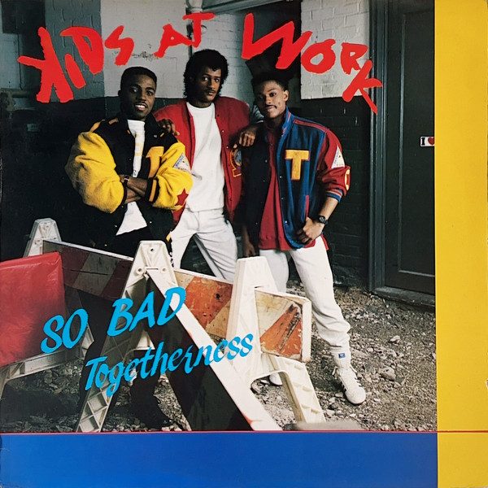
1984
Kids at Work ends
+−
The group's run is short, but it leaves Teddy with studio experience, industry contacts, and the confidence to begin producing beyond his own band. Its ending pushes him from group member toward independent creator — writing, arranging, playing keyboards, and producing records for other performers.
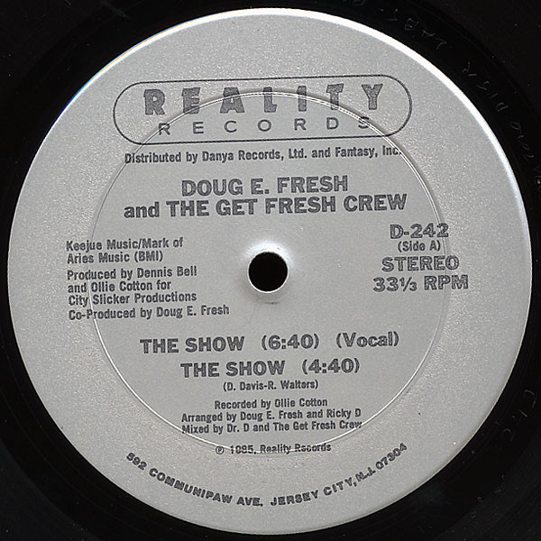
1985
"The Show" breaks through
+−
Still a teenager, Teddy works on "The Show" with Doug E. Fresh and the Get Fresh Crew. It becomes one of hip-hop's foundational records and the real start of his production career, connecting him to a national audience and showing that his musical instincts could strengthen records outside his own group.
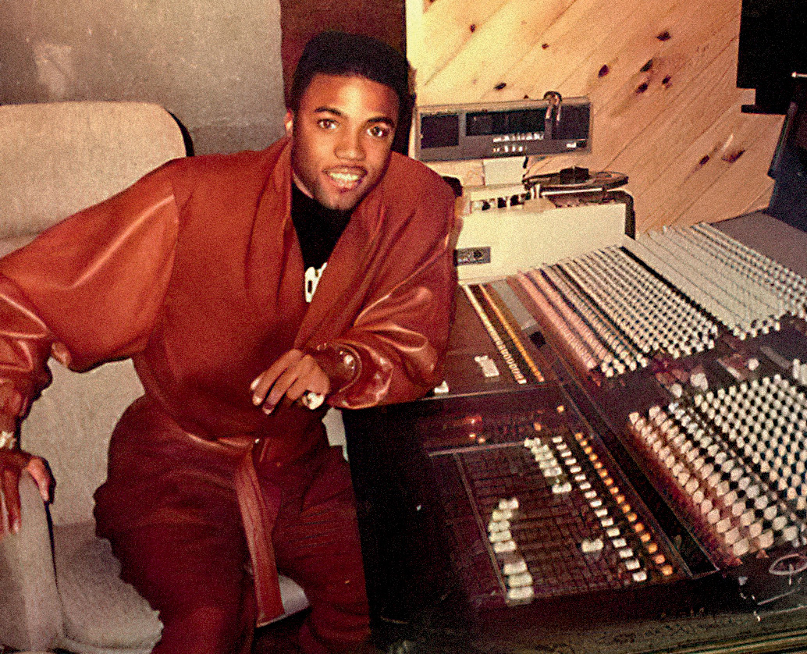
1986
The sound takes shape
+−
Kool Moe Dee's "Go See the Doctor" pairs Teddy's hard drum programming with musical hooks and becomes a street hit. He later points to this record as the moment New Jack Swing first fully clicked into place — programmed drums hitting with hip-hop force while chords and hooks retained R&B sophistication.
1986 Rooftop Records +−
Rooftop Records opens its doors above Harlem's Rooftop skating rink. Still a teenager, Teddy is put in charge of production and teaches himself the new generation of drum machines and samplers by trial and error, often working long hours until programming and performance feel inseparable.
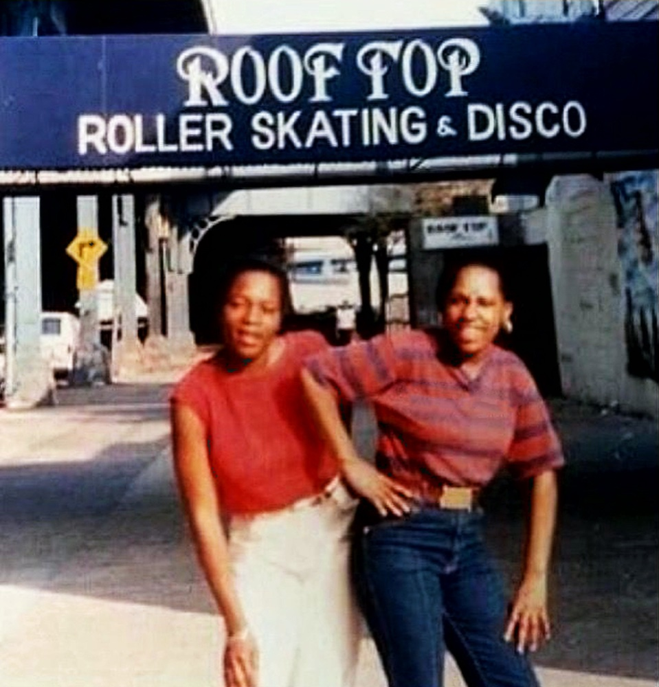
Late 1986
A robbery at the Rooftop
+−
Armed men enter the Rooftop looking for cash. Teddy and others are held at gunpoint; a robber who recognizes him intervenes, and he survives the ordeal. The attackers believed money was being kept at the building — afterward, Teddy no longer feels secure leaving his equipment there.
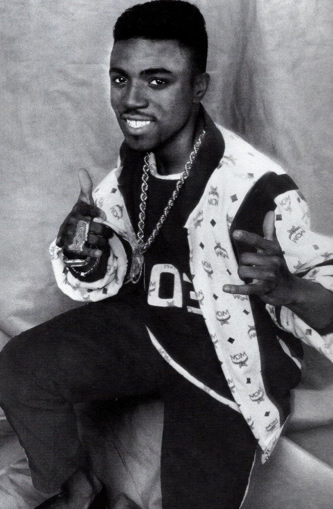
1986–87
The home studio
+−
For safety, Teddy moves his equipment to his mother's apartment. The living room becomes a laboratory where drum programming and layered keyboards sharpen his signature sound, removing the separation between daily life and production and encouraging fast experimentation.
New Jack Swing
1987–1990
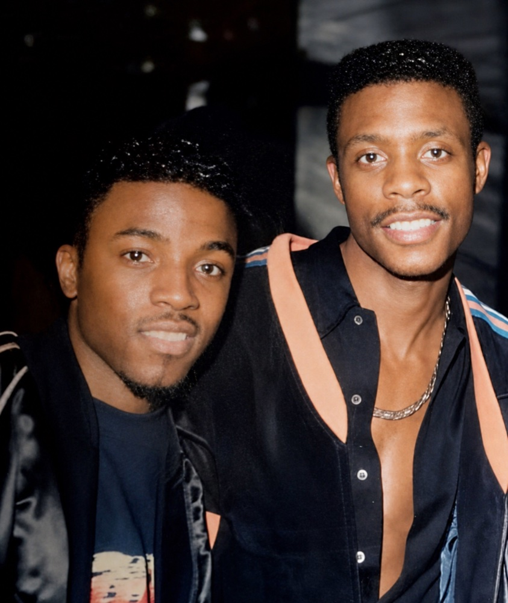
1987
London & "I Want Her"
+−
A recording session in London with Kool Moe Dee widens Teddy's technical range. Back home that same year, he writes and produces Keith Sweat's "I Want Her" — his first Billboard Hot 100 Top 5 hit, and one of the releases that introduces New Jack Swing to a much larger national audience.
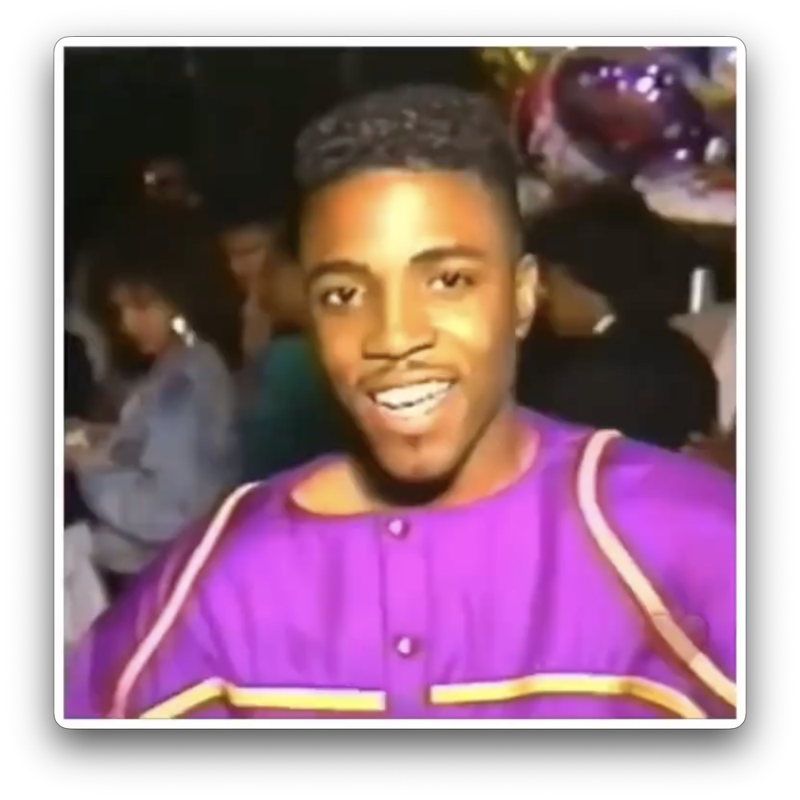
1987
The Zomba publishing deal
+−
The London connection leads to a publishing agreement with Zomba/Jive, giving Teddy a stronger professional foundation as his production career accelerates. It gives his songwriting an international business structure, and teaches him that ownership could matter as much as the immediate payment for producing a record.
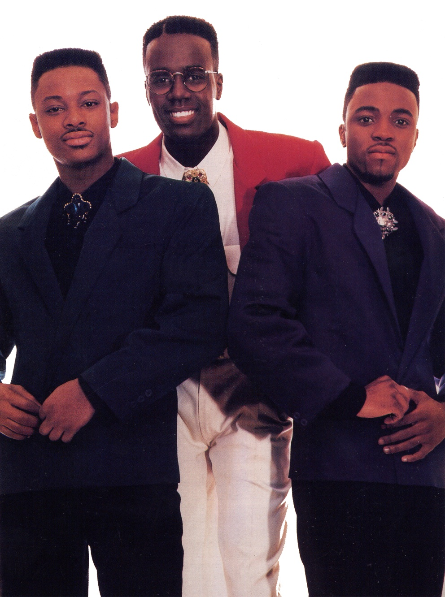
1988
Guy changes R&B
+−
Guy's platinum debut fuses gospel-rooted vocals with hip-hop's bounce. "Groove Me," "Teddy's Jam," "I Like," and "Piece of My Love" set a new template that R&B would follow for years. The group pairs Teddy with brothers Aaron and Damion Hall, whose gospel intensity and supporting voice sound both traditional and futuristic against his drums.
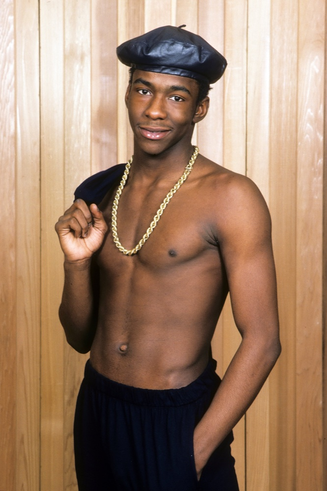
1988
"My Prerogative"
+−
Released that October, Bobby Brown's "My Prerogative" carries Teddy's sound straight into the pop mainstream and cements his reputation as the architect behind New Jack Swing. The single reaches No. 1 on the Billboard Hot 100, its clipped keyboard figures and aggressive groove turning his production language into unmistakable pop culture.
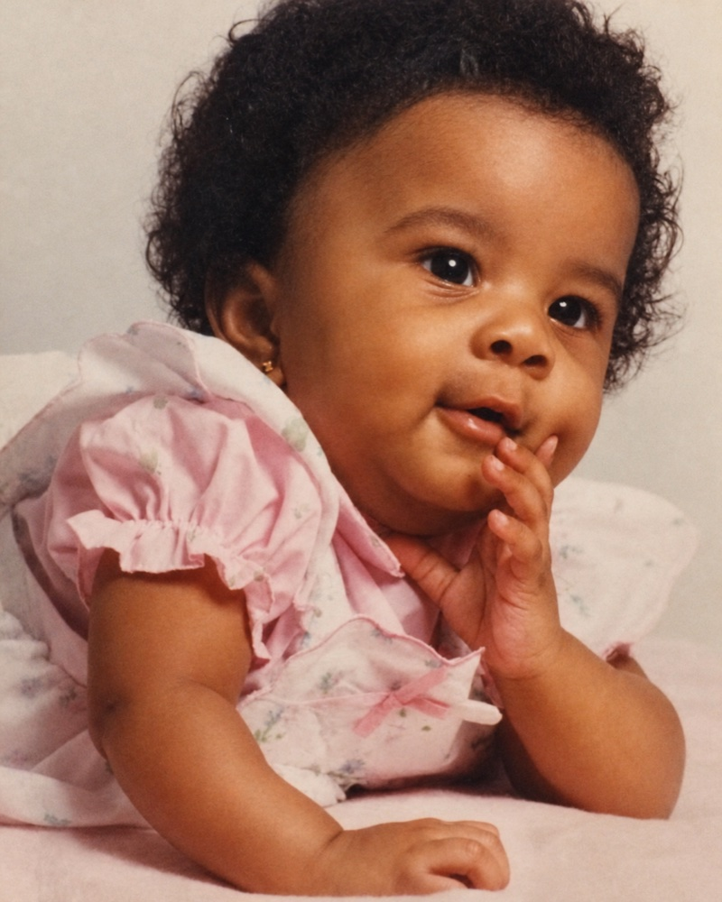
1988
Deja is born
+−
Teddy reconnects with his former girlfriend Nicole, and they welcome his eldest daughter, Deja, as his career reaches a new national level. Fatherhood adds responsibility during one of the busiest periods of his career — family remains a recurring counterweight to touring, studio pressure, and the instability of the record business.
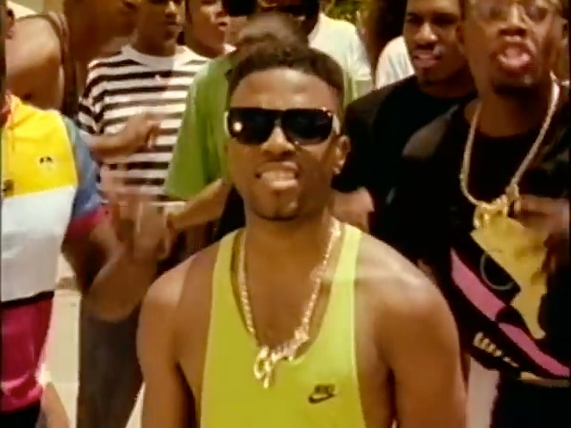
1989
Hip-hop hitmaker
+−
Teddy stays busy on the hip-hop side too, producing Big Daddy Kane's "I Get the Job Done" and working with Kool Moe Dee on Knowledge Is King, while Guy's "My Fantasy" — from Spike Lee's Do the Right Thing — tops the R&B chart. Success in R&B hasn't separated him from rap; he adjusts the same rhythmic intelligence to very different voices and audiences.
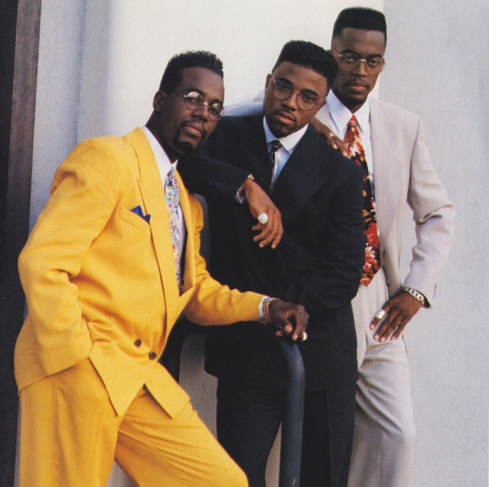
1990
Freedom & The Future
+−
Teddy parts ways with manager Gene Griffin. Guy's second album, The Future, plays like a statement of independence and reaches No. 1 on the R&B/Hip-Hop Albums chart. The split follows years in which Teddy believed he hadn't received a fair share of the income their work generated; his mother urges him to leave the arrangement.
Studio empire
1991–1999
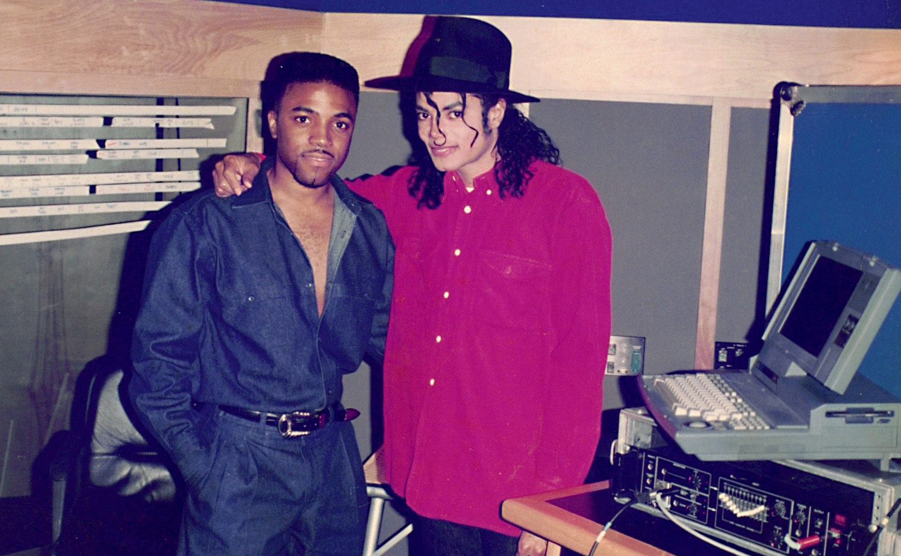
1991
Michael calls
+−
Michael Jackson calls Teddy in to help shape Dangerous. Teddy steps away from Guy, brings in dozens of tracks, and begins an intense collaboration that will take New Jack Swing global. The call arrives after Teddy has already established major hits with Keith Sweat, Bobby Brown, and Guy.
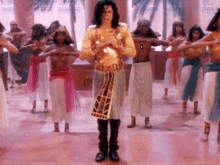
1991
Dangerous
+−
Teddy co-produces seven tracks on Dangerous, among them "Remember the Time," "Jam," "In the Closet," and the title track — his street-level rhythm polished to a worldwide pop shine. The album sells tens of millions worldwide; "Remember the Time" becomes the clearest meeting point between Jackson's melodic precision and Teddy's swing.
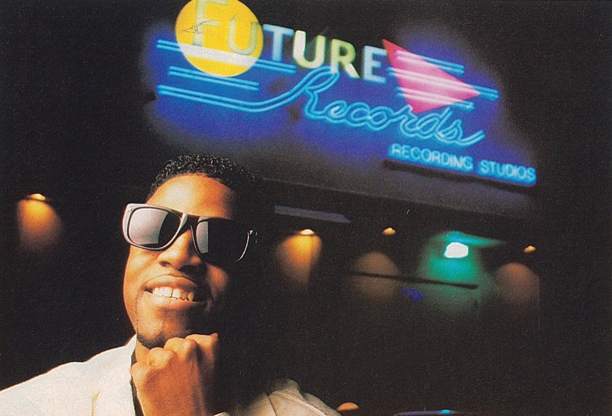
1991
Virginia Beach future
+−
Teddy relocates to Virginia Beach and builds Future Recording Studios — a creative home base that will go on to help raise the next generation of producers to come out of the city. Construction is already underway when he commits to relocating full-time, giving him his own SSL-equipped base outside New York.
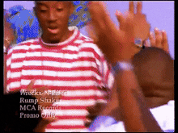
1992
"Rump Shaker" at Future
+−
Wreckx-n-Effect's Hard or Smooth becomes Future Studios' pilot hit project. "Rump Shaker," developed there, climbs to No. 2 on the Billboard Hot 100. Teddy works on the album with his brother Markell, a member of Wreckx-n-Effect, and the song's video is filmed in Virginia Beach, linking the hit directly to the new studio.
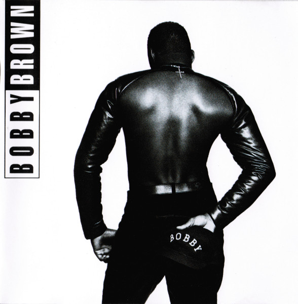
1992
Bobby, round two
+−
Working out of Future Studios, Teddy reunites with Bobby Brown for the album Bobby, pushing the New Jack Swing sound further after their "My Prerogative" breakthrough. Brown is recording the follow-up to Don't Be Cruel, and the sessions are among the early major albums made at Future.
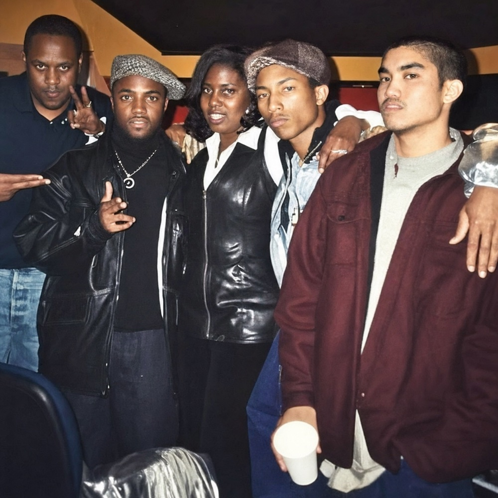
Early 1990s
A Virginia Beach producer pipeline
+−
Future Studios becomes a training ground for emerging talent, including Pharrell Williams, Chad Hugo, Rodney Jerkins, Nottz, Bink, and others who will shape the next era. Young creators observe sessions and learn equipment there before many establish their own platinum-selling careers — Pharrell and Chad Hugo later become the Neptunes, carrying the region's influence forward.
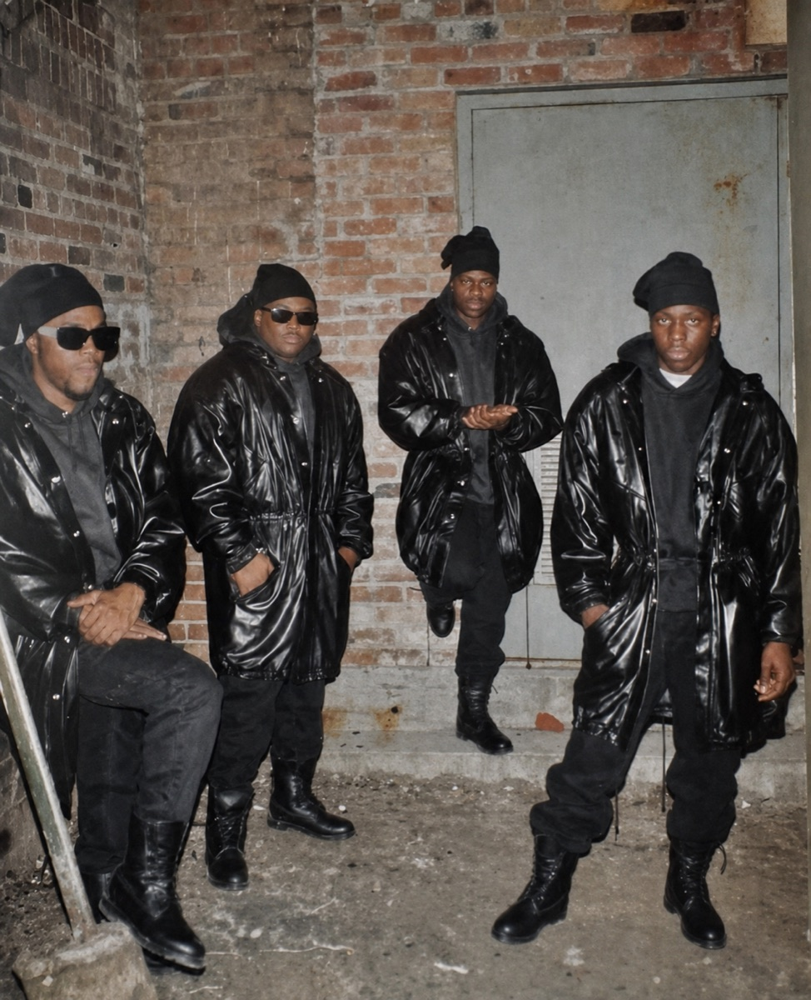
1993
Blackstreet begins
+−
Teddy forms Blackstreet and starts work on their debut album, building a new vocal group around his production from the ground up. The original lineup brings together Teddy Riley, Chauncey Hannibal, Levi Little, and Dave Hollister — Teddy had known Hannibal before employing him at Future Studios.
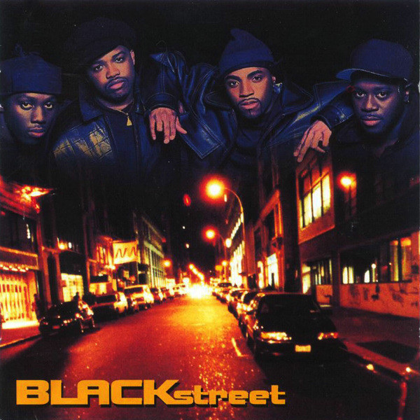
1994
Blackstreet arrives
+−
Blackstreet's self-titled debut arrives, with "Before I Let You Go" among its lasting songs — the start of the second great group chapter in Teddy's career, after Guy. The album establishes Blackstreet's identity before lineup changes and the recording of the group's much larger-selling second album.
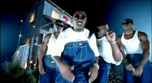
1996
"No Diggity"
+−
"No Diggity," featuring Dr. Dre and Queen Pen, becomes a No. 1 hit and a cultural landmark. The Another Level album turns Blackstreet into an international arena act. Teddy builds the record around an opening piano sample he'd saved for a special song; its spare, relaxed swing sounds unlike the denser New Jack records that preceded it.
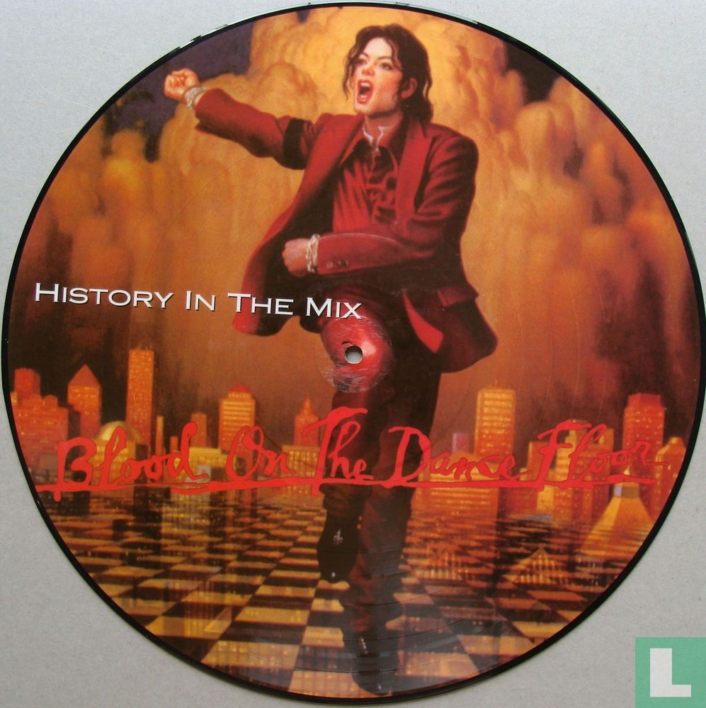
1997
Michael, Jay-Z & a wider world
+−
"Blood on the Dance Floor" becomes a major international Michael Jackson single, reaching No. 1 in the United Kingdom and several European markets, while Blackstreet joins Jay-Z on "The City Is Mine" from In My Lifetime, Vol. 1 — widening Teddy's reach across pop and hip-hop at once.
1998 Grammy victory +−
Blackstreet take home the Grammy for Best R&B Performance by a Duo or Group with Vocals for "No Diggity," recognition for a record that had already become bigger than the charts. It marks Teddy's evolution from teenage studio prodigy to internationally honored artist-producer.
Reinvention
2000–2008
2000 A needed pause +−
After years without a real break, Teddy steps back from the road and the studio grind and moves to California to spend time with family, just as the record business starts turning digital. Years of overlapping albums, tours, businesses, and family obligations had taken a toll.
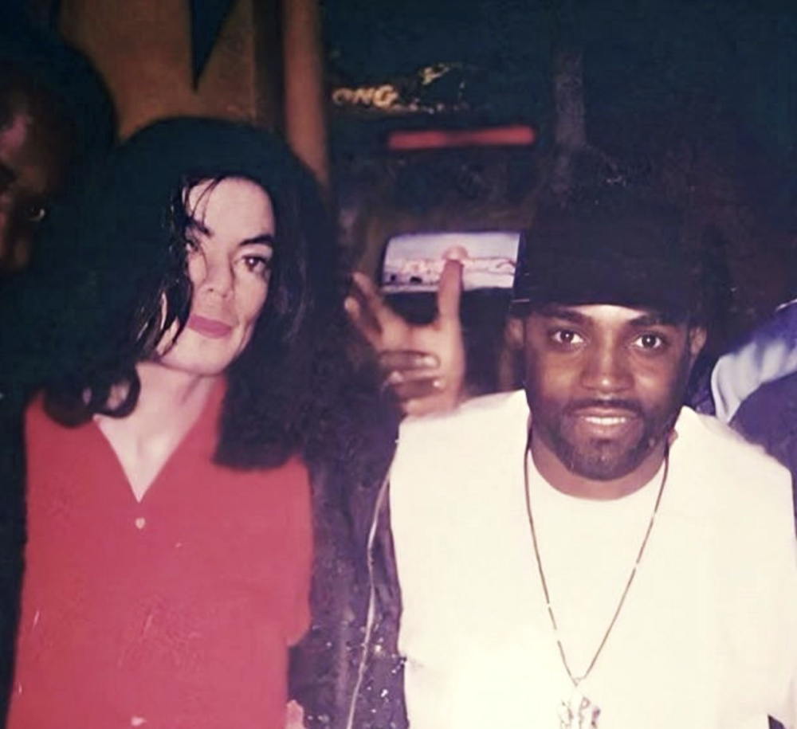
2001
Invincible reunion
+−
Teddy reunites with Michael Jackson for Invincible, contributing to "Heaven Can Wait," "2000 Watts," "Don't Walk Away," and "Whatever Happens." The sessions revisit a creative partnership formed during Dangerous, roughly a decade later, contributing several songs to what became Jackson's final studio album released during his lifetime.
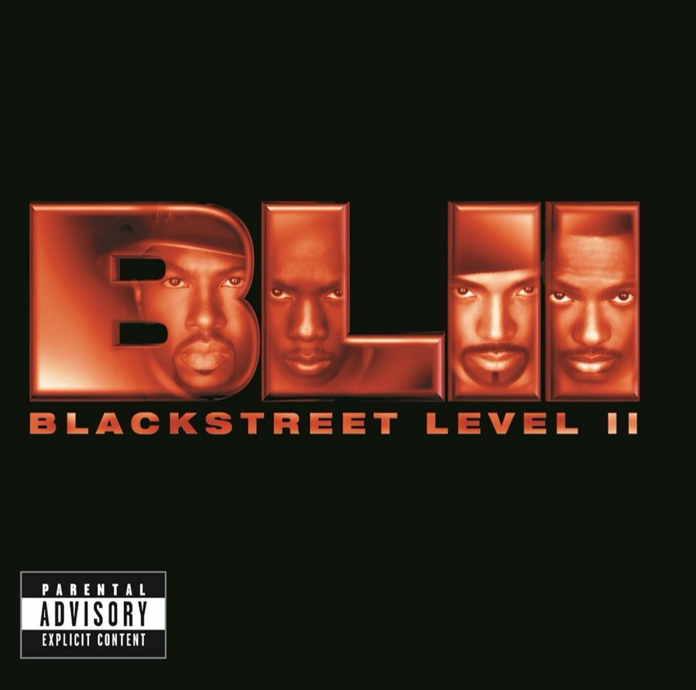
2003–04
Blackstreet, Britney & LL
+−
Blackstreet releases Level II, and Teddy branches out further — producing Britney Spears's hit remake of "My Prerogative" and LL Cool J's "I'm About to Get Her." The projects place his signature in three markets at once: veteran R&B, mainstream teen pop, and established hip-hop.
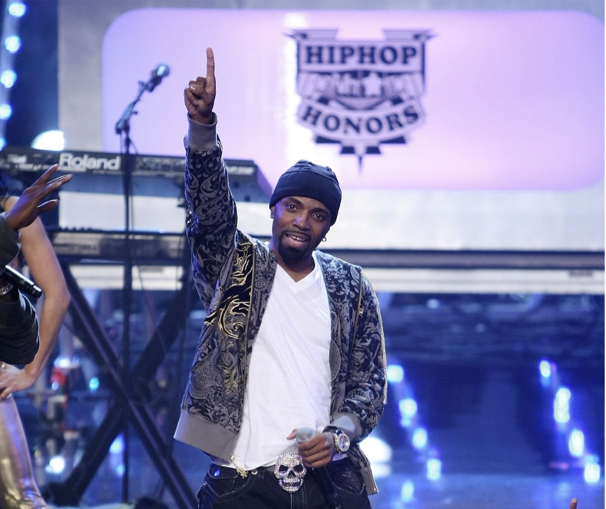
2007
Honors around the world
+−
A VH1 Hip Hop Honors tribute at the Hammerstein Ballroom is followed by sold-out shows in Japan and a New Year's Eve concert in Taiwan — proof of how far the catalog had traveled. Audiences who first met New Jack Swing through imports and videos now treat the music as a global legacy repertoire.
Going global
2009–2018
2009–11 New Jack goes K-pop +−
Teddy becomes one of the first American producers to shape the sound of South Korean pop, working with acts including Girls' Generation and Jay Park and bringing New Jack Swing to a new generation of listeners. K-pop's choreography, vocal groups, rap sections, and electronic production make it a natural setting for his approach.
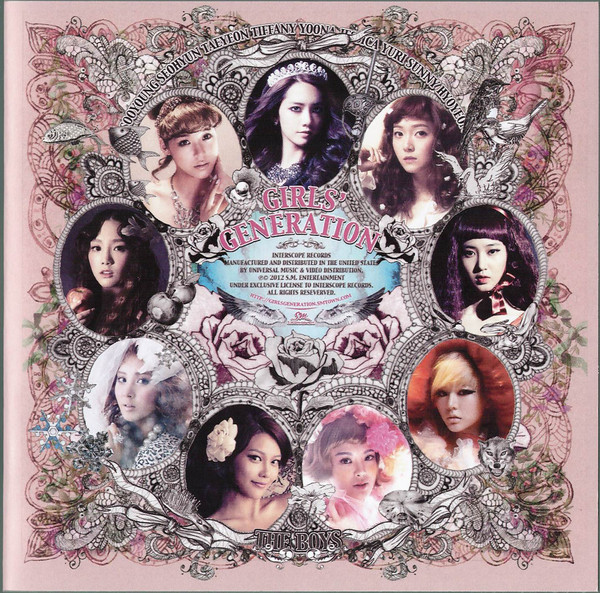
2011
"The Boys" travels worldwide
+−
Teddy produces Girls' Generation's "The Boys," helping connect New Jack Swing's rhythmic language with the increasingly global K-pop industry. Released in Korean and English versions, it becomes part of the group's expansion beyond South Korea.
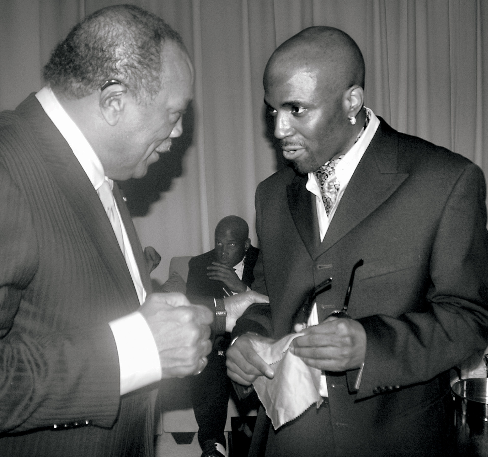
2012
Atlanta & the ICON Award
+−
Back in the U.S. and now based in Atlanta, Teddy receives the ASCAP ICON Award along with a city proclamation, while mentoring and working alongside a new wave of Southern talent. The honor recognizes his body of songwriting and production work after more than two decades of major releases.
2016–17 Legend status, Guy reunited +−
The Soul Train Music Awards hand Teddy their Legend Award. The following year, Guy get back together for a sold-out Legends Tour, putting the original trio in front of old and new fans alike. The reunion returns Teddy, Aaron Hall, and Damion Hall to the stage nearly three decades after their debut.
2018 Homecoming honors +−
Harlem hands Teddy the Key to the City and declares a New Jack City Day in his honor. On the Grammy stage that same year, Bruno Mars name-checks him as one of the teachers behind 24K Magic. The recognition connects his global accomplishments back to the neighborhood that formed him.
Legacy
2019–2024
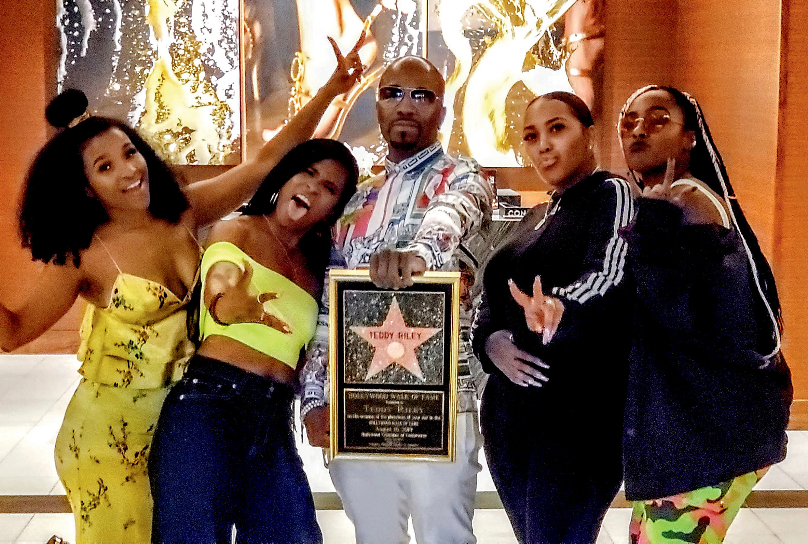
2019
6405 Hollywood Boulevard
+−
On August 16, Teddy is awarded the 2,670th star on the Hollywood Walk of Fame — official recognition for more than three decades of work across R&B, hip-hop, and pop as artist, songwriter, producer, composer, arranger, and engineer. He publicly centers his mother's sacrifices and support during the ceremony.
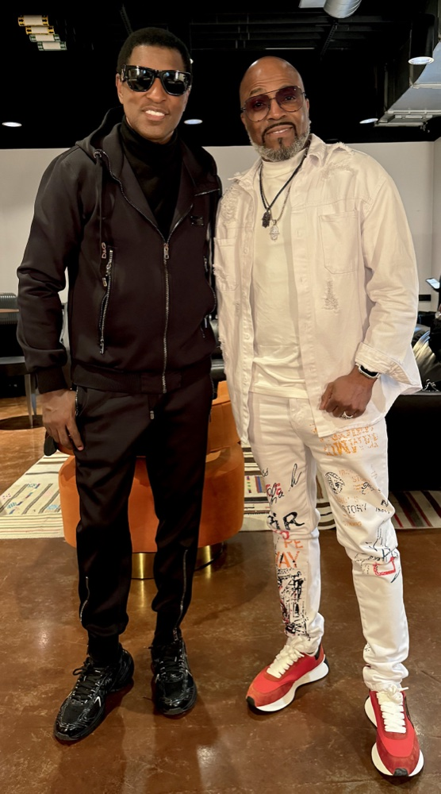
2020
Verzuz breaks the internet
+−
A lockdown-era Verzuz matchup against Babyface turns into a multigenerational celebration of both catalogs. A glitch-heavy first attempt only builds anticipation for the rematch, which draws millions of viewers — hearing Teddy's catalog beside Babyface's clarifies how completely both producers shaped modern R&B.
2022–24 A living legacy +−
The National Museum of African American Music honors Teddy at its Legends Luncheon, while a new generation keeps finding his records — sampling, streaming, and covering songs cut decades earlier. The influence survives not only in nostalgia shows but in the rhythmic design of contemporary R&B, hip-hop, pop, and K-pop.
2024 Remembering Mildred Riley +−
Teddy's mother, Mildred Riley, dies in February. Her guidance runs through his memoir: from protecting his earliest contracts to steering him away from the street and grounding his career. She appears throughout as advocate, business protector, truth-teller, and emotional center — her death gives his reflections on family, conflict, gratitude, and forgiveness added weight.